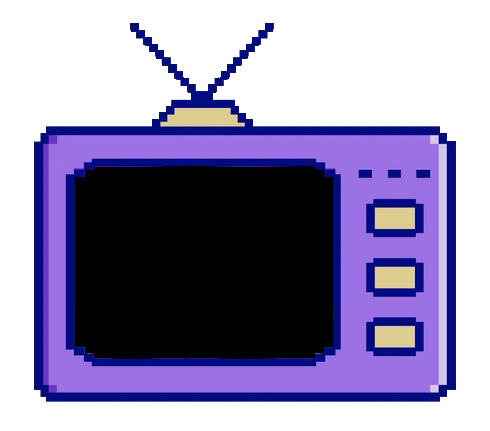

Retro TV Simulator
Click the button below to turn the TV on and off. Use your Up & Down keys to adjust the volume. Use your Left & Right keys to change the channels.
PowerClick the button below to turn the TV on and off. Use your Up & Down keys to adjust the volume. Use your Left & Right keys to change the channels.
Power